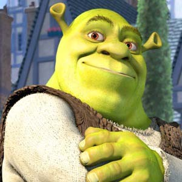

Once upon a time there was a lovely
princess. But she had an enchantment
upon her of a fearful sort which could
only be broken by love's first kiss.
She was locked away in a castle guarded
by a terrible fire-breathing dragon.
Many brave knights had attempted to
free her from this dreadful prison,
but non prevailed. She waited in the
dragon's keep in the highest room of
the tallest tower for her true love
and true love's first kiss. (laughs)
Like that's ever gonna happen. What
a load of - (toilet flush)
Allstar - by Smashmouth begins to play. Shrek goes about his
day. While in a nearby town, the villagers get together to go
after the ogre.
There is a line of fairy tale creatures. The head of the guard
sits at a table paying people for bringing the fairy tale creatures
to him. There are cages all around. Some of the people in line
are Peter Pan, who is carrying Tinkerbell in a cage, Gipetto
who's carrying Pinocchio, and a farmer who is carrying the three
little pigs
The Gingerbread Man is pulled out of the milk and slammed down
onto a cookie sheet. Farquaad laughs as he walks over to the
table. However when he reaches the table we see that it goes
up to his eyes. He clears his throat and the table is lowered.
